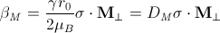
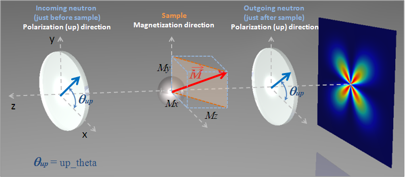
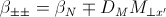
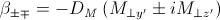
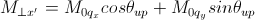
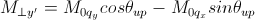
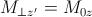
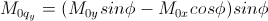
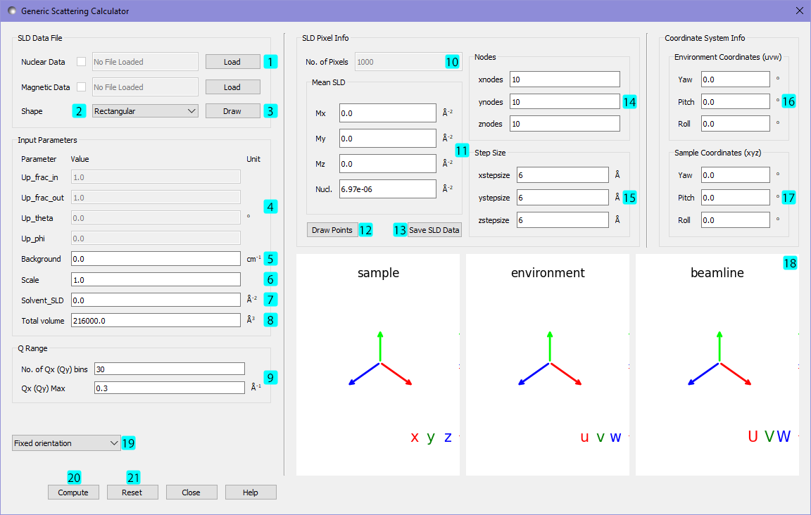
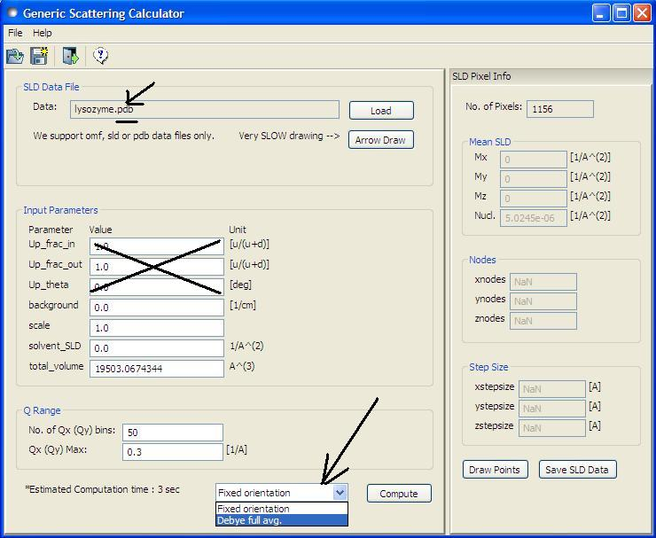

Generic Scattering Calculator:
Polarization and Magnetic Scattering
1. Theory
In general, a particle with a volume V can be described by an ensemble containing N
3-dimensional rectangular pixels where each pixels are much smaller than V.
Assuming that
all the pixel sizes are same, the elastic scattering intensity
by the particle

where βj and rj are the scattering
length density and the position
of the j'th pixel respectively. And the total volume

for βj ≠ 0 where vj is the volume of the j'th pixel
(or the j'th natural atomic volume (= atomic mass/natural molar density/Avogadro number)
for the atomic structures). The total volume V can be corrected by users.
This correction is useful especially for an atomic structure (taken from a pdb file) to get the right
normalization. Note that the βj displayed in GUI may be incorrect but will not
affect the scattering computation if the correction of the total volume is made.
The scattering length density (SLD) of each pixel where the SLD is uniform, is a combination of the nuclear and magnetic SLDs
and depends on the spin states of the neutrons as follows:
For magnetic scattering, only the magnetization component, Mperp,
perpendicular to the scattering vector Q contributes to the the magnetic
scattering length. (Figure below).

The magnetic scattering length density is then

where γ = -1.913 the gyromagnetic ratio, μB is the Bohr magneton,
r0 is the classical radius of electron,
and σ is the Pauli spin.
For polarized neutron, the magnetic scattering is depending on the spin states.
Let's consider that the incident neutrons are polarized parallel (+)/anti-parallel
(–) to the x' axis (See both Figures above).
The possible out-coming states then are + and - states for both incident states.
- Non-spin-flips: (+ +) and (- -)
- Spin-flips: (+ -) and (- +)

Now, let's assume that the angles of the Q vector and the spin-axis (x') from x-axis
are φ and θup, respectively (See Figure above).
Then, depending upon the polarization (spin) state of neutrons, the scattering length
densities , including the nuclear scattering length density (β N) are given as, for non-spin-flips,

for spin-flips,

where





Here, the M0x, M0y and M0z are the x, y and z
components of the magnetization vector given in the xyz lab frame.
2. GUI

After the computation, the result will be listed in the 'Theory' box
in the data explorer panel on the main window.
The 'Up_frac_in' and 'Up_frac_out' are the ratio, (spin up) /(spin up + spin down) neutrons
before the sample and at the analyzer, respectively.
*Note I: The values of 'Up_frac_in' and 'Up_frac_out' must be in the range between 0 and 1.
For example, both values are 0.5 for unpolarized neutrons.
*Note II: This computation is totally based on the pixel (or atomic) data fixed
in the xyz coordinates. Thus no angular orientational averaging is considered.
*Note III: For the nuclear scattering length density, only the real component is taken account.
3. PDB Data
This Generic scattering calculator also supports some pdb files without considering polarized/magnetic scattering
so that the related parameters such as Up_*** will be ignored (see the Picture below). The calculation for fixed orientation uses (the first) Equation above resulting
in a 2D output, whileas the scattering calculation averaged over all the orientations uses the Debye equation providing a 1D output:

where vjβj ≡ bj is the scattering length of the j'th atom.
The resultant outputs will be displayed in the DataExporer for further uses.
